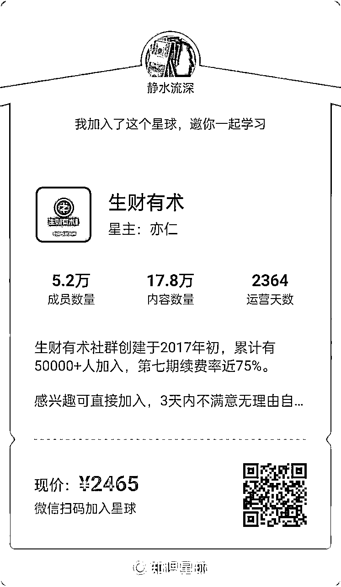

来源：https://tj51bxige8.feishu.cn/docx/UjhhdBIJeoi3ZsxGuJtcJrvWnVb
大家好，我是静水流深，英文工具站的教练组成员。
我在杭州线下会我答应过亦仁 ，以后多提供优质出海内容，让生财有术越办越好。
我之前的分享：《分享3个单人就能做的海外赚钱案例》
后来我又拿出了一个新的项目，也是可以一个人单干而且一定可以月入万刀的：
https://tj51bxige8.feishu.cn/docx/M0hMdjWj3o8WtNxZdv4cLnfenIh
然后依然一些人存在疑问，今天我在这里用正在跑的一个项目，分享给大家，当然这个项目我一年前也在我的星球丝绸之路几次提示过会员是可以做的，只是没人玩得有我这么大。
前段时间chatGPT火的时候，我分享了一篇文章独发在生财有术，结果还是过于敏感，被星球官方删除：
https://tj51bxige8.feishu.cn/docx/TSZBdBfynoBINux2htWcefrtnHc
上个月分享了《通过Wise的推荐项目，每天躺赚一万英镑+》也受到了一致好评，今天在这里再一次感谢大家的点赞与支持。
最近几天高考，亦仁抛出了一个话题，考上985与年入100万哪个更难？
于是有了这篇文章的开头《考上985与年入100万哪个更难？这期航海挖的坑今天开始填》
因为写这个独发生财的连载起因是航海的时候答应过各位船友的，只是上次一次契机，所以这一次我把标题换了，以后以这个来连载，当然也会点题，讲述这二十多年来，互联网圈特别是国外互联网圈经历的一些事以及一些机会，希望分享能够给大家带来有价值的体验。
未阅读前面的朋友可以看
《那一年，我十分钟赚到了100万（12万美元）连载之二》
《那一年，我十分钟赚到了100万（12万美元）连载之三》
《那一年，我十分钟赚到了100万（12万美元）连载之四》
《那一年，我十分钟赚到了100万（12万美元）连载之五》
《那一年，我十分钟赚到了100万（12万美元）连载之六》
《那一年，我十分钟赚到了100万（12万美元）连载之七》
此连载纯属虚构，如有雷同，纯属巧合。
引言：
我独自一人来到了加拿大，而且由于飞机晚点，延误了八个小时，我到加拿大的时候已经是午夜。在上飞机之前，说老实话，我只知道我飞多伦多，我连住哪，以及去哪个学校完全不知道，只知道当时交了150加元的费用，到时候下飞机有人来接机，以及次日会帮我办好税务，银行等相关信息。
2006年9月，上海，几个朋友，还有上海主场的朋友，打着送我的旗号在上海聚会，其实那哪是去送我，而是几个人去旅游加聚会，外带谈下合作事宜，包括我父母，也是如此，到上海后也去自己玩去了。9月3号下午三点我就到了浦东机场，这个机场是我第二次去，自从2005年之后，武汉飞上海的航班，都改为在浦东机场降落，之前一直觉得不好，因为浦东机场实在太远，后来发现，如果从海外飞中国，再飞回武汉，把武汉飞上海的飞机改到浦东降落，确实是个不错的举措。当然，我之后很少飞多伦多到上海这条航线，因为第一次就延误了我八个小时。这里附带提一句，如果你要飞国际航线，一定要选择好一家不错的航空公司，提前成为他们的会员，这样就可以在你第一次飞行的时候就可以给你累计里程。一般国际航线因为路程远，里程累计也比较多，回赠也比较丰厚。比如我的加拿大航空公司的会员积分现在已经接近20万分，15万分就可以换来回飞中国的头等舱，而坐经济舱飞一次来回加拿大到中国的航线，一般可以累计15000积分左右，单这一次的积分里程累计，你就可以免费换取从加拿大的多伦多飞美国的纽约往返飞机票一次。
9月4号午夜我到达多伦多国际机场，我当时只知道一件事情，跟着人群走。这是第一次入境北美，我什么都不懂，就拿出所有的材料，给入境的工作人员，人家直接问了一句，你是第一次来加拿大？我说是的，然后要我去旁边一个小屋。进去之后，里面有个翻译，问我需要不需要翻译，我说需要，然后就跟我一起来到了另外一个入境柜台，人家看了下我的签证，以及我的一些材料，问我来干什么的，我说来读书的，接着直接发给我了一张时间等同于我的护照上的VISA签证的移民纸，这个东西专业点叫学生签证大签。在加拿大，你如果是留学生，你的签证有两种，一种是大签，一种是小签，小签就是你护照上的VISA签证，这个签证是你入加拿大境的时候使用，分多次跟一次，入境之后这个签证就没任何作用了，另外一种就是大签，大签其实也就是study permit，是你在加拿大境内呆的许可，有这个东西，你在加拿大居住才属于合法居留。
出了机场，很快发现来接我的人，我心里还是比较感激的，因为当时都凌晨4点左右了，人家从一开始等到现在，真是比较负责的，那个时候没有航旅纵横这种APP，航班信息以及航班到达时间均一无所知，只有到了机场看接机信息里显示Delay而已。坐上了车，往多伦多市区开，加拿大给我第一感觉就是车多，午夜高速公路上都还有不少的车，在沿途我还发现了IKEA，感觉就像还是在上海一样。
当我放下行李，整理自己的房间的时候，房东说，租房需要200加元的押金，以及15加元的钥匙押金，要我次日去缴纳，我一听，就快昏了，我总共就带来500欧元的大钞出来，还想预付了三个月的房租伙食，应该没什么别的需要了，这下钱就少了接近一半。剩下的钱，我去办理了个手机计划免费送了一个手机，签了一个宽带，总共花了我几十加元，因为是后付费的，买了10张公交车票，又花了几十加元，差不多没什么钱了。
有些时候，一些招术，不到万不得已的时候，我是不会去使用的。在这样山穷水尽的地步，我想到了一个这辈子，我最喜欢的公司，888（还有一家我也喜欢可惜被收购了，那就是之前的国外有名广告联盟公司 befree.com）。因为我到了一个新的国家，所有的资料全是新的，而且888对加拿大的政策跟对中国的完全不一样，加拿大地区的顾客，赠送的红利只需要压满两倍，就可以提现，而中国地区的是十二倍。什么叫压满多少倍红利才可以提现？就是说，通常一般的网络娱乐公司，你去买筹码，都会有红利也就是Bonus赠送，比如888这家，就是你买多少筹码，送多少红利，最高赠送200美元，但是赠送的这200美元，必须要满足在你下注累计达到他们规定的倍数这个条件，才可以提取，比如888规定是两倍，就是说如果你有200美元的红利，你下注总额（不计较输赢）达到400美元，你就可以提出这200美元。
我当时身上还有一张中国银行的信用卡，500美元的信用额度，我跑到888去买了200美元的筹码，也就是买最高可以配送红利的金额，去玩里面的游戏。经过一夜的鏖战，我当时可以算是这辈子玩博彩游戏最细心谨慎的一次了，因为输了就麻烦了，不过还好，至今我在888还未尝败绩，那次也不例外，一晚上，我赢到了1100美元出来了。然后选择提现，200美元返还到我的信用卡，剩下的钱会直接电汇到我的银行户头。其实，赌这个东西，我跟人赌，我没赢的把握，如果我跟机器赌，我几乎有100%的把握不输。因为机器永远是机器，程序永远有规律，只要你找到了规律，加上你良好的心态，输，几乎是不可能的事情。这里提示一点，所有的网络娱乐游戏，有一个固定的也永远不可能更改的规律，就是庄抽水大约为2%，而剩下的98%左右的流动资金，只不过是从这个人的口袋，到那个人的口袋而已。如果是一个公平的平台，算法则是根据时间随机，这段时间如果流入到玩家的流水太多，庄没有获得2%，那么基本上你什么牌面都会输，大概率输，这个时候熟悉的人会有感觉的，可以选择休息一段时间或直接1美元下注混时间，相反，如果这段时间庄抽水太多，超过了流水的2%，就会获利回吐，特别是像21点，玩家12-15点不需要要牌，庄几乎把把都会爆牌玩家直接赢结束战斗。
赢了900美元，有了短暂的喘息机会。我跑到了加拿大本地的华人网站上面，寻找哪里有二手电脑卖，因为笔记本电脑是不可能长期开机的，很幸运，我发现了一个帅哥，正在低价卖九成新的电脑。2006年，那个电脑是什么配置，我这里可以说下，17寸的液晶显示器，512M的显存，3.2G的CPU，2G的内存，外加500G的硬盘，一起只卖550加币，简直是卖废铁价。直到那个帅哥给我送电脑过来的时候，我才知道为什么这个电脑卖这么便宜，那个帅哥是开的奥迪A4送电脑过来的，一般这样的情况多半就是出事情了手上紧，要么就是去娱乐场输了钱。
杯水车薪，并不能完全解决实际的问题，只是赚钱工具已经全部具备，这个时候就要开始考虑进一步的计划了。因为身份的完全改变，以前的一些记录也就完全消失。我这个时候，我的思维又回到了我另外的最擅长的技术之一，Google Adwords。可以这样说，我玩Google Adwords的时候，中国几乎没什么人知道Google Cash这本书，国内的SEO大师王通，是我送给他我翻译好的Google Cash 2004版，才知道Google Adwords的。为什么我后来没去继续玩Google Adwords，不是我不想继续去搞，而是搞不了了，因为滥用优惠券，我进入了Google的黑名单，我申请的任何Google Adwords帐号，要么就不显示广告，要么就直接把我K掉。之前Google刚推出Adwords的时候，我就是大量使用他们赠送的优惠券，以及花100人民币这样低廉的激活成本，去投放广告。其暴利程度，我个人觉得，至今还没有任何项目可以超越，大家可以去想象一下，Google Adwords刚开始的时候本身当时竞争对手就不多，一般关键字点击价格其实就是起步价格0.04美元一次点击，我又用优惠券，投放广告成本几乎可以用忽略不计这个词语来形容。接着我找到了一个不错的项目，就是Ciao这家调查公司，有个Affiliate推荐会员项目，可以推荐中国人，推荐一个新用户成为Ciao这家调查网站的会员可以获得0.25美元一个推荐。我稍微分析了下这个项目，如果广告语写得动人点，点击转化率应该不低于20%，同时对于这样的项目，根本不需要去竞争搜索投放的，我全部用内容广告显示，把关键字点击单价优化到了极限，也就是人民币0.08元一次点击。当广告正常显示之后，每天我的平均利润差不多有300美元，我每天关心的并不是我收入多少，而是担心钱烧得不够快，因为钱烧得越多，我就赚得越多。当然，我只要玩Google Adwords，是一定会使用优惠券的，而且能够用多少，我会尽量用多少的，那次也没有例外。项目坚持了一段时间，我再次不幸的进入了Google Adwords黑名单。
Ciao项目收工之后，确实觉得有点可惜，没赚足够多，不过，启动资金已经足够了，我也不需要继续再玩这类项目，进而买了几百个域名，搞了几个域名停放公司的帐号，跟别人合作，获取更多更快的报酬。
鉴于很多热心读者喜欢提问，找我提问请去生财有术的原帖下面评论区直接提问，还有一些没有加入生财有术的朋友，可以点这里加入生财有术：
https://t.zsxq.com/12fUcmHrw
